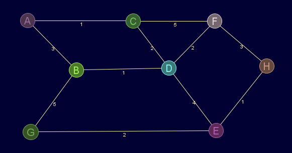

Descripción
Máxima excentricidad de los nodos del grafo.
Si el grafo no es ponderado, se tomarán las aristas con peso igual a 1 y la ausencia de ellas como infinito
Cadena de entrada
gr_diametro
Cadena de salida
GRAFO.diametro
Uso
gr_diametro(<grafo>)
Ejemplos
gr_nuevo([[inf,3,1,inf,inf,inf,inf,inf],[3,inf,inf,1,inf,inf,5,inf],[1,inf,inf,2,inf,5,inf,inf],[inf,1,2,inf,4,2,inf,inf],[inf,inf,inf,4,inf,inf,2,1],[inf,inf,5,2,inf,inf,inf,3],[inf,5,inf,inf,2,inf,inf,inf],[inf,inf,inf,inf,1,3,inf,inf]],['A','B','C','D','E','F','G','H'],falso,verdadero)
Salida en JMEScriptGUI con visor de grafos v0.1:

gr_diametro(gr_nuevo([[inf,3,1,inf,inf,inf,inf,inf],[3,inf,inf,1,inf,inf,5,inf],[1,inf,inf,2,inf,5,inf,inf],[inf,1,2,inf,4,2,inf,inf],[inf,inf,inf,4,inf,inf,2,1],[inf,inf,5,2,inf,inf,inf,3],[inf,5,inf,inf,2,inf,inf,inf],[inf,inf,inf,inf,1,3,inf,inf]],['A','B','C','D','E','F','G','H'],falso,verdadero))
RealDoble: 8
Véase también…
gr_radio, gr_excentricidad, gr_centro
Desde / Última modificación
v0.6.2.0